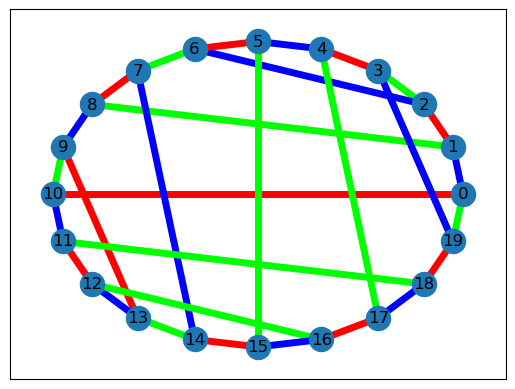
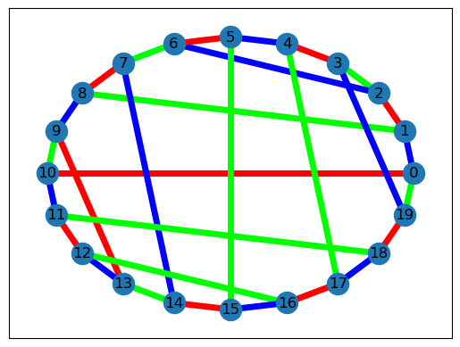

2. Tutorial¶
2.1. How to draw somewthing¶
Hello World, This is a tutorial.
import networkx as nx
import matplotlib.pyplot as plt
import gcol
G = nx.dodecahedral_graph()
c = gcol.node_coloring(G)
print(gcol.partition(c))
print("Number of colors =", max(c.values()) + 1)
nx.draw_networkx(G, pos = nx.spring_layout(G, seed=1), node_color=gcol.get_node_colors(G, c))
plt.show()
nx.draw_networkx(G, pos = gcol.coloring_layout(G, c), node_color=gcol.get_node_colors(G, c))
plt.show()
nx.draw_networkx(G, pos = gcol.multipartite_layout(G, c), node_color=gcol.get_node_colors(G, c))
plt.show()
[[0, 2, 4, 8, 13, 15, 18], [1, 6, 10, 12, 14, 17, 19], [3, 5, 7, 9, 11, 16]]
Number of colors = 3

c = gcol.edge_coloring(G)
print(gcol.partition(c))
print("Number of colors =", max(c.values()) + 1)
nx.draw_networkx(G, pos = nx.spring_layout(G, seed=1), edge_color=gcol.get_edge_colors(G, c), width=5)
plt.show()
nx.draw_networkx(G, pos = nx.circular_layout(G), edge_color=gcol.get_edge_colors(G, c), width=5)
[[(0, 10), (1, 2), (11, 12), (14, 15), (16, 17), (18, 19), (3, 4), (5, 6), (7, 8), (9, 13)], [(0, 19), (1, 8), (11, 18), (12, 16), (13, 14), (2, 3), (4, 17), (5, 15), (6, 7), (9, 10)], [(0, 1), (10, 11), (12, 13), (15, 16), (17, 18), (2, 6), (3, 19), (4, 5), (7, 14), (8, 9)]]
Number of colors = 3
 

c = gcol.equitable_edge_k_coloring(G, 5)
print(gcol.partition(c))
print("Number of colors =", max(c.values()) + 1)
nx.draw_networkx(G, pos = nx.spring_layout(G, seed=1), edge_color=gcol.get_edge_colors(G, c), width=5)
plt.show()
[[(0, 10), (11, 12), (13, 14), (18, 19), (2, 6), (7, 8)], [(1, 2), (11, 18), (14, 15), (16, 17), (3, 4), (9, 10)], [(10, 11), (17, 18), (2, 3), (5, 15), (6, 7), (9, 13)], [(0, 1), (12, 16), (3, 19), (4, 17), (5, 6), (8, 9)], [(0, 19), (1, 8), (12, 13), (15, 16), (4, 5), (7, 14)]]
Number of colors = 5
import random
from scipy.spatial import Delaunay
random.seed(1)
n = 500
#Form a Delaunay triangulation T of n points in the unit square
P = [(random.random(), random.random()) for i in range(n)]
T = Delaunay(P).simplices.copy()
#Convert T to a simple graph G
G = nx.Graph()
for v in range(n):
G.add_node(v, pos=(P[v][0], P[v][1]))
for x, y, z in T:
G.add_edge(x, y)
G.add_edge(x, z)
G.add_edge(y, z)
c = gcol.node_coloring(G, opt_alg=2, it_limit=10000)
print("Number of colors =", max(c.values()) + 1)
nx.draw_networkx(G, pos=nx.get_node_attributes(G, "pos"), with_labels=False, node_size=10, node_color=gcol.get_node_colors(G, c), width=0.5)
plt.show()
Number of colors = 4
2.2. How to do something else¶
S = gcol.max_independent_set(G, it_limit=10000)
print("Independent size =", len(S), "of", len(G))
nx.draw_networkx(G, pos=nx.get_node_attributes(G, "pos"), with_labels=False, node_size=10, node_color=gcol.get_independent_set_colors(G, S), width=0.5)
plt.show()
Independent size = 152 of 500